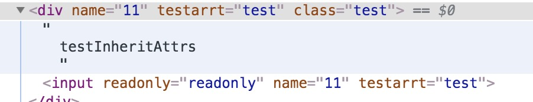
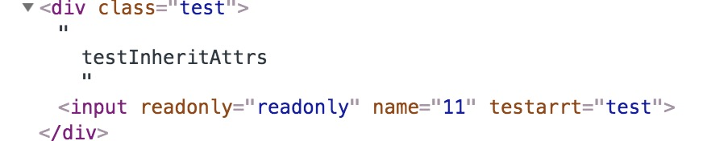

谈谈 vue 中的配置项 inheritAttrs
- 类型：
bollean - 默认值：
true 详细
默认情况下父作用域下不被认作
props的特性绑定(attribute bindings) 将会回退且作为普通的HTML特性应用在子组件的根元素上。当撰写包裹一个目标元素或另外一个组件的时候， 这可能不会总是符合预期行为。通过设置inheritAttrs到false,这些默认行为将会被去掉。 而通过实例属性$attrs可以让这些特性生效，且可以通过v-bind显性的绑定到非根元素上。注意：这个选项不影响
class和style绑定
example
- 子组件:inheritAttrs:true
<template>
<div>
testInheritAttrs
<input
:readonly='readonly'
v-bind='$attrs'
/>
</div>
</template>
<script>
export default {
name:'testInheritAttrs',
props: {
readonly: Boolean,
},
inheritAttrs:true, // 默认情况
mounted(){
console.log(this.$attrs)
}
}
</script>
父组件
<template>
<div class="test-container">
<test-inherit-attrs :readonly="readonly" class='test' name='11' testArrt='test'/>
</div>
</template>
<script>
import testInheritAttrs from './testInheritAttrs.vue'
export default {
name: 'TestTwo',
components:{
testInheritAttrs
},
data() {
return {
readonly:true,
}
}
}
</script>
让我们来看下html 中渲染出来的样子 
- 子组件:inheritAttrs: false
让我们来看下html 中渲染出来的样子 
总结
当
inheritAttrs:true我们可以看到子组件没有被认作props的特性绑定 的属性nametestArrt都被绑定到了子组件的根元素上,反之这个默认行为可以去掉$attrs包含了父作用域中不作为prop被识别（且获取）的特性绑定（class,style除外）父作用域下
classstyle会跟子组件根元素上的classstyle合并，一起绑定在子元素根元素上